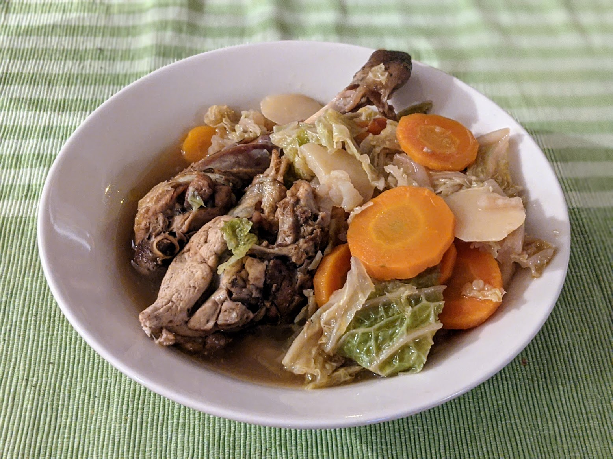

Pintade à la bière

Pour 5-6 personnes :
- Une pintade coupée en morceaux
- Deux oignons
- Cinq ou six carottes
- Sept ou huit pommes de terre
- Un chou vert
- Un cube de bouillon de bœuf
- Une grosse cuillère à soupe de baies de genièvre
- Un litre de bière blonde
- Deux cuillères à soupe de cassonade (ou de sucre)
- Huile d'olive, sel, poivre
- S'occuper des légumes : éplucher et émincer les oignons ; éplucher les pommes de terre et les couper en rondelles ; et faire subir le même sort aux carottes. Finir par enlever les feuilles extérieures du chou, avant de le couper et le laver (en commençant l'étape suivante pendant ce temps).
- Faire revenir le poulet dans l'huile d'olive sur toutes ses faces. Quand c'est fait, ajouter carottes, oignons, pommes de terre, baies de genièvre et cassonade. Mélanger et cuire pendant cinq bonnes minutes.
- Saler, poivrer, ajouter le cube de bœuf, la bière et le chou. Compléter avec un demi-litre d'eau environ (il ne faut pas que ça baigne entièrement, plutôt aux deux tiers).
- Faire cuire deux bonnes heures à partir des premiers bouillons.
Retour à la liste des recettes